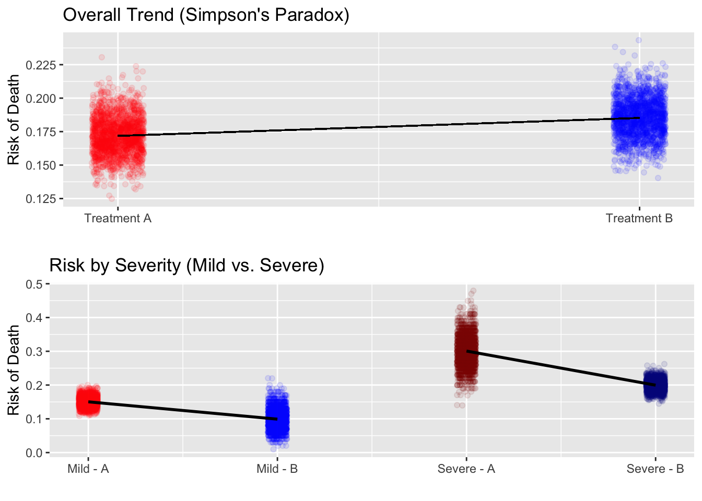
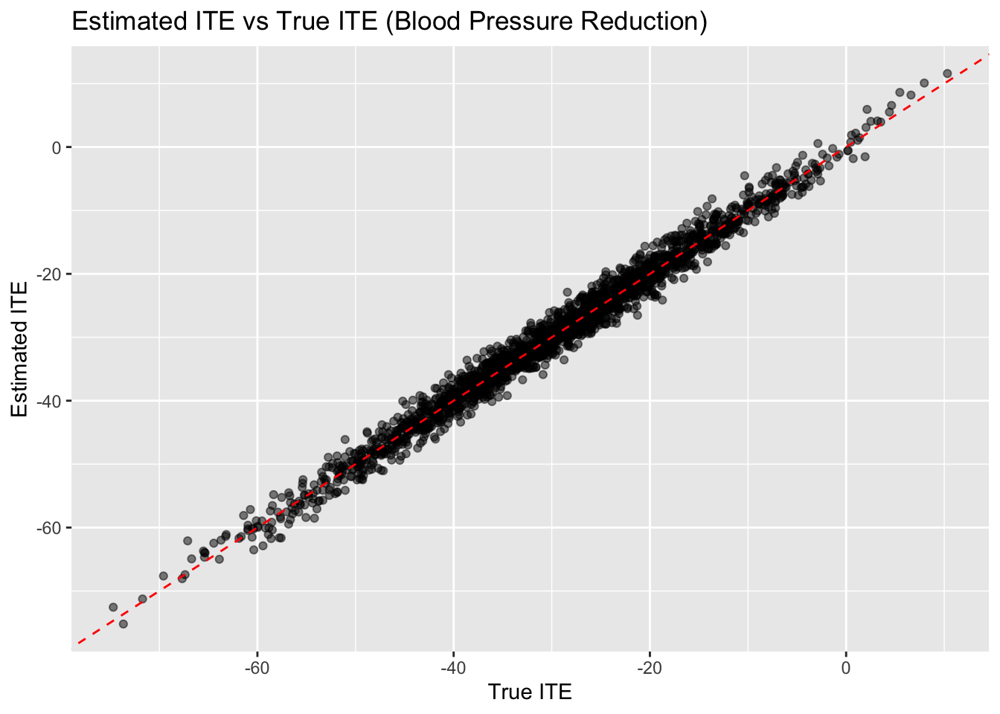
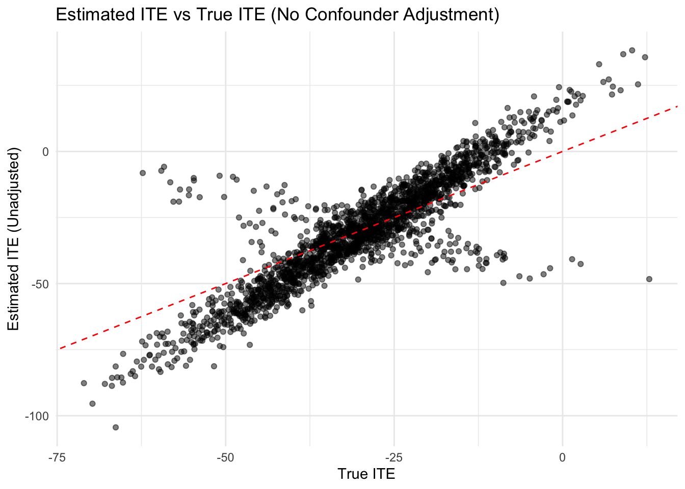
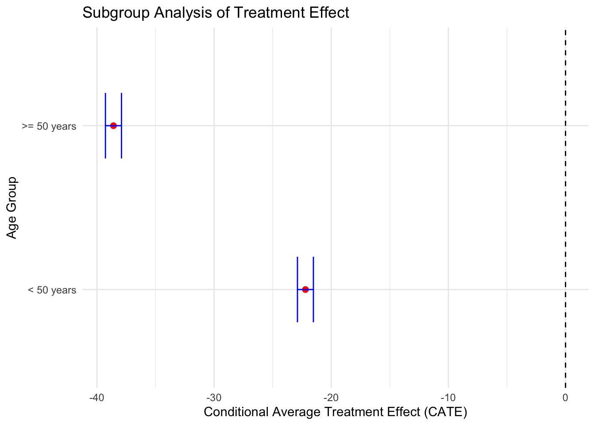
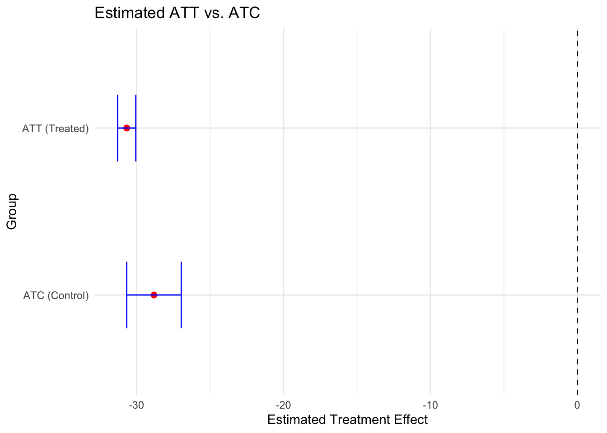
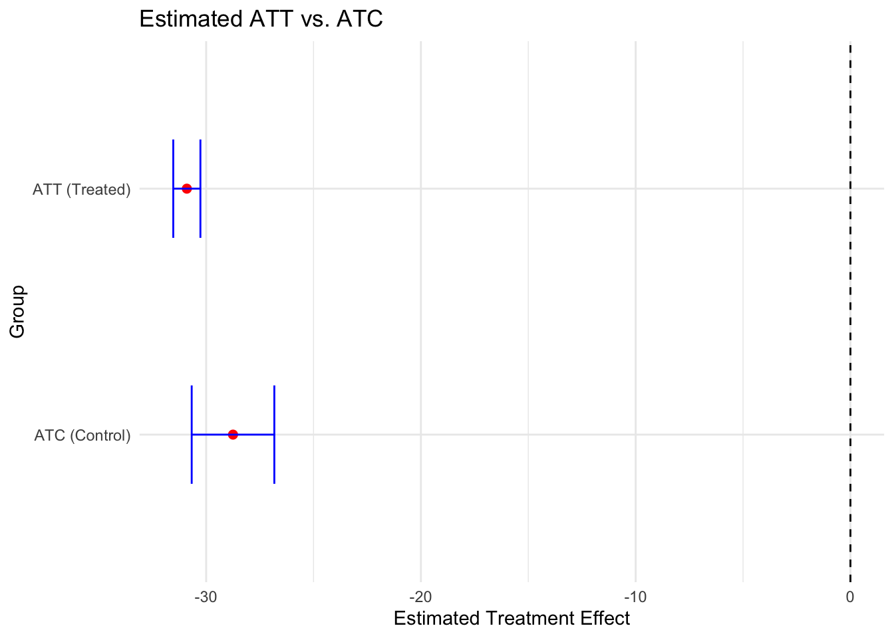

1 Foundations of Causal Thinking in Public Health
Class materials
Slides: Module 1
Recording: Module 1, Part 1.1
Recording: Module 1, Part 2.1
Recording: Module 1, Part 2.2
Textbook reading
Supplementary reading
Pearl, J. and Mackenzie, D. (2018) The Book of Why: The New Science of Cause and Effect. Basic Books. Selected public health news articles (provided on the course site).
Topics covered
- Association vs. Causation
- Introduction to Counterfactuals and Potential Outcomes
- Causal Estimands and Identification
- Critical reading exercise: analyzing causal claims in public health news
1.1 Association vs. Causation
Brief Discussion:
Association refers to a statistical relationship or correlation between two variables, where changes in one variable are linked to changes in another. For example, there might be an association between ice cream sales and drowning incidents—both tend to increase during the summer. However, this does not mean one causes the other; rather, they are both influenced by a third factor: temperature. Association simply tells us that two variables move together in some way, but it does not imply that one variable directly affects or determines the other. These relationships are often observed in observational studies, where researchers record data without manipulating any variables.
Causation, on the other hand, implies a direct cause-and-effect relationship between two variables. If variable A causes variable B, then changes in A will produce changes in B. Establishing causation requires much stronger evidence than association and often involves controlled experiments, like randomized controlled trials, where researchers actively intervene and isolate variables to rule out confounding factors. In the ice cream example, just because two variables are associated doesn’t mean one causes the other—causation would only be claimed if rigorous testing shows that changes in one variable consistently lead to changes in the other, and alternative explanations have been ruled out.
Explanation of Simpson’s paradox
Simpson’s Paradox is a concept in statistics where a trend or pattern observed within several groups is reversed when the groups are combined. This paradox occurs due to confounding variables. It highlights how the way data is aggregated can significantly alter the interpretation of the results.
Within each group, there is a clear trend. However, when these groups are combined, the trend reverses because of the difference in weights and/or proportions within each group. A confounding variable is an unaccounted factor that has a direct effect on the relationship between the treatment and the effect. In Simpson’s Paradox, the confounding variable skews the results because it creates an imbalance between the two treatments.
Simpson’s Paradox shows the importance of looking at data closely within groups rather than only looking at the aggregated data. It underscores the importance of considering context and tells a cautionary tale of how misinterpretations of data can lead to consequences. Before drawing conclusions, we must analyze data at the most specific level and consider all possible confounding variables.
Here is a real-world example to consider. Imagine a hospital testing two treatments for pneumonia. Treatment A is given to mostly patients with mild cases of pneumonia, while treatment B is given to mostly given to patients with severe cases of pneumonia. When you examine each vaccine’s efficacy for each severity group (mild or severe), it seems that treatment B is slightly more effective than treatment A. However, when you look at treatment A and B as a whole without regarding the severity of the cases, then vaccine A looks to be more effective because the majority of patients who receive it have mild cases of pneumonia, bringing down the average death rate. I simulated the study 2000 times. In the end, I produced a 2 by 3 table with the average death rate in each matrix. This helped show that while there are variations between different studies, the overall average of 2000 studies is pretty similar to the expected values for each group.
Next, I created two graphs demonstrating the effects of Simpson’s Paradox. The first graph illustrates the overall effects of Treatment A and Treatment B without considering disease severity as a confounding factor. Each treatment contains 2,000 data points, where each point represents the death rate for that treatment in a single simulation. The x-axis distinguishes between the two treatments, while the y-axis represents the risk of death. A linear model was then fitted to connect the two treatments, showing the overall trend in death risk between Treatment A and Treatment B. However, this graph does not account for the severity of the disease.
The second graph accounts for disease severity, revealing the true relationship between treatment and death risk. I separated data into four groups: Mild and Treatment A, Mild and Treatment B, Severe and Treatment A, and Severe and Treatment B, with each group containing 2,000 data points representing death rates from individual simulations. Instead of a single linear model, two separate models are fitted; one for Mild cases and one for Severe cases. In the end, it is clear that Treatment B results in lower death risk than Treatment A within each severity group. This demonstrates Simpson’s Paradox, where the overall trend in the first graph is misleading because it fails to account for the confounding effect of disease severity.
Lastly, this regression model quantifies the relationship between treatment, disease severity, and their influence on death risk. The dependent variable (response variable) is death risk, while the independent variables include treatment type (0 = Treatment A, 1 = Treatment B), disease severity (0 = Mild, 1 = Severe), and an interaction term (Treatment × Severity). The model estimates how switching treatments and increasing severity affect death risk, as well as whether the effectiveness of a treatment changes depending on severity. If the interaction term (between the treatment and the severity) is significant, it indicates that the effect of treatment differs for mild and severe cases, further confirming the presence of Simpson’s Paradox in the dataset.
Step 1: Simulate Data and Compute Death Rates Across Groups
- Simulated data for 2,000 trials of patients by severity and treatment.
- Stored average death rates for each subgroup and for Treatment A vs B.
# library(ggplot2)
# library(dplyr)
n_simulations <- 2000
rate11 <- numeric(n_simulations) # Mild & Treatment A
rate12 <- numeric(n_simulations) # Mild & Treatment B
rate21 <- numeric(n_simulations) # Severe & Treatment A
rate22 <- numeric(n_simulations) # Severe & Treatment B
rate1 <- numeric(n_simulations) # Overall Treatment A
rate2 <- numeric(n_simulations) # Overall Treatment B
for (i in 1:n_simulations) {
severity <- rep(c("Mild", "Severe"), each = 700)
treatment <- c(rep("Treatment A", 600), rep("Treatment B", 100),
rep("Treatment A", 100), rep("Treatment B", 600))
outcome <- c(rbinom(600, 1, 0.15), rbinom(100, 1, 0.1), rbinom(100, 1, 0.3),
rbinom(600, 1, 0.2))
data <- data.frame(Severity = severity, Treatment = treatment,
Outcome = outcome)
death_counts <- tapply(data$Outcome, list(data$Severity, data$Treatment),
sum)
total_counts <- table(data$Severity, data$Treatment)
proportions <- death_counts / total_counts
rate11[i] <- proportions["Mild", "Treatment A"]
rate12[i] <- proportions["Mild", "Treatment B"]
rate21[i] <- proportions["Severe", "Treatment A"]
rate22[i] <- proportions["Severe", "Treatment B"]
rate1[i] <- sum(death_counts["Mild", "Treatment A"],
death_counts["Severe", "Treatment A"]) /
sum(total_counts["Mild", "Treatment A"],
total_counts["Severe", "Treatment A"])
rate2[i] <- sum(death_counts["Mild", "Treatment B"],
death_counts["Severe", "Treatment B"]) /
sum(total_counts["Mild", "Treatment B"],
total_counts["Severe", "Treatment B"])
}Step 2: Summary Table of Death Rates
- Calculated average death rates for each group and printed a summary table.
avg_rate11 <- mean(rate11) * 100
avg_rate12 <- mean(rate12) * 100
avg_rate21 <- mean(rate21) * 100
avg_rate22 <- mean(rate22) * 100
avg_rate1 <- mean(rate1) * 100
avg_rate2 <- mean(rate2) * 100
final_table <- data.frame(
Treatment = c("Treatment A", "Treatment B"),
Mild_Avg = paste(round(c(avg_rate11, avg_rate12), 1), "%"),
Severe_Avg = paste(round(c(avg_rate21, avg_rate22), 1), "%"),
Total_Avg = paste(round(c(avg_rate1, avg_rate2), 1), "%")
)
final_table## Treatment Mild_Avg Severe_Avg Total_Avg
## 1 Treatment A 15 % 30 % 17.1 %
## 2 Treatment B 10 % 19.9 % 18.5 %Step 3: Visualizing Simpson’s Paradox
This code creates two plots:
1. Overall trend ignoring severity
2. Subgroup trends by severity
suppressWarnings({
# library(gridExtra)
# Plot 1: Overall treatment death risk comparison
overall_plot_data <- data.frame(
X_Pos = rep(c(1, 2), each = n_simulations),
Death_rate = c(rate1, rate2),
Treatment = rep(c("Treatment A", "Treatment B"), each = n_simulations)
)
p1 <- ggplot(overall_plot_data, aes(x = X_Pos, y = Death_rate,
color = Treatment)) +
geom_point(alpha = 0.1, position = position_jitter(width = 0.05),
show.legend = FALSE) +
geom_segment(aes(x = 1, xend = 2, y = avg_rate1 / 100,
yend = avg_rate2 / 100), color = "black") +
scale_x_continuous(breaks = c(1, 2),
labels = c("Treatment A", "Treatment B")) +
scale_color_manual(values = c("Treatment A" = "red",
"Treatment B" = "blue")) +
labs(title = "Overall Trend (Simpson's Paradox)", x = "",
y = "Risk of Death")
# Plot 2: By severity
plot_data_p2 <- data.frame(
X_Pos = rep(1:4, each = n_simulations),
Death_rate = c(rate11, rate12, rate21, rate22),
Group = rep(c("Mild - A", "Mild - B", "Severe - A", "Severe - B"),
each = n_simulations),
Severity = rep(c("Mild", "Mild", "Severe", "Severe"), each = n_simulations)
)
p2 <- ggplot(plot_data_p2, aes(x = X_Pos, y = Death_rate, color = Group)) +
geom_point(alpha = 0.1, position = position_jitter(width = 0.05)) +
geom_smooth(data = subset(plot_data_p2, Severity == "Mild"), method = "lm",
se = FALSE, color = "black") +
geom_smooth(data = subset(plot_data_p2, Severity == "Severe"),
method = "lm", se = FALSE, color = "black") +
scale_x_continuous(breaks = 1:4,
labels = c("Mild - A", "Mild - B", "Severe - A", "Severe - B")) +
scale_color_manual(values = c("Mild - A" = "red", "Mild - B" = "blue",
"Severe - A" = "darkred",
"Severe - B" = "darkblue")) +
labs(title = "Risk by Severity (Mild vs. Severe)", x = "",
y = "Risk of Death") +
guides(color = "none")
grid.arrange(p1, p2, nrow = 2)
})## `geom_smooth()` using formula = 'y ~ x'
## `geom_smooth()` using formula = 'y ~ x'
Step 4: Fit Regression Model to Test for Interaction
- Fitted a linear model to estimate how treatment and severity affect death risk
- Graphed if there’s an interaction between them
regression_data <- data.frame(
Death_rate = c(rate11, rate12, rate21, rate22),
Treatment = rep(c(0, 1, 0, 1), each = n_simulations),
Severity = rep(c(0, 0, 1, 1), each = n_simulations)
)
regression_data$Interaction <- regression_data$Treatment *
regression_data$Severity
model <- lm(Death_rate ~ Treatment + Severity + Interaction,
data = regression_data)
summary(model)##
## Call:
## lm(formula = Death_rate ~ Treatment + Severity + Interaction,
## data = regression_data)
##
## Residuals:
## Min 1Q Median 3Q Max
## -0.139980 -0.015903 -0.000175 0.015354 0.160020
##
## Coefficients:
## Estimate Std. Error t value Pr(>|t|)
## (Intercept) 0.1496458 0.0006593 226.97 <2e-16 ***
## Treatment -0.0494708 0.0009324 -53.06 <2e-16 ***
## Severity 0.1503342 0.0009324 161.23 <2e-16 ***
## Interaction -0.0512733 0.0013187 -38.88 <2e-16 ***
## ---
## Signif. codes: 0 '***' 0.001 '**' 0.01 '*' 0.05 '.' 0.1 ' ' 1
##
## Residual standard error: 0.02949 on 7996 degrees of freedom
## Multiple R-squared: 0.8627, Adjusted R-squared: 0.8627
## F-statistic: 1.675e+04 on 3 and 7996 DF, p-value: < 2.2e-161.2 Introduction to Counterfactuals and Potential Outcomes
At the heart of causal inference lies a simple yet powerful idea: counterfactuals — what would have happened if something else had occurred. To formalize this, the Potential Outcomes Framework defines two outcomes for each individual:
Y(1): The outcome if the individual receives the treatment
Y(0): The outcome if the individual does not receive the treatment
The causal effect for an individual is the difference: τi = Yi(1) − Yi(0)
But here’s the catch: we can never observe both outcomes for the same person. This is known as the Fundamental Problem of Causal Inference. We only observe the outcome under the condition that actually occurred — everything else is unobserved, or counterfactual.
As shown in the Simpson’s Paradox example above, failing to account for confounding variables can lead to conclusions that completely misrepresent the true causal effect. When we simply compare outcomes between treated and untreated groups without considering differences in their underlying characteristics (like disease severity), we risk attributing differences to the treatment that are actually due to selection bias. By thinking in terms of potential outcomes — what would have happened under treatment vs. no treatment — we can see how causal claims require more than just association. This framework makes clear that understanding the data-generating process is critical, and it motivates the need for methods that can uncover hidden structure in the data.
While the average treatment effect (ATE) helps summarize the overall impact of a treatment, it often masks important variation across individuals. In practice, not everyone responds to treatment the same way — some benefit more than others, and some may even be harmed. This brings us to the concept of the Individual Treatment Effect (ITE), which asks: what was the treatment effect for this specific person? Although we can never observe both potential outcomes for a single individual, we can use modeling techniques to estimate ITEs and explore treatment effect heterogeneity. The following example demonstrates how this was done using simulated data.
Individual Treatment Effect (ITE)
In causal inference, the Individual Treatment Effect (ITE) measures how much one specific patient benefits from a treatment. ITE focuses on personalized benefits - how much an intervention would change the outcome for each person at the same time. The formula for the ITE is Yi(1) - Yi(0), where Yi(1) is the outcome if the person receives the treatment while Yi(0) is the outcome if the person does not receive the treatment.
A fundamental problem in causal inference is that we can never observe both Yi(1) and Yi(0) for the same person, because each person either receives the treatment or does not, meaning one of the outcomes is missing. This is known as the fundamental problem of causal inference, and because of this, we use statistical methodologies and machine learning techniques to estimate ITE.
To do this, I simulated healthcare data.
Simulating the Patient Data
- Simulated 2,000 individuals, each with baseline characteristics: age, BMI, and cholesterol.
- Treatment assignment is based on a model where older individuals with higher cholesterol are more likely to receive treatment.
- Generated two potential outcomes for each individual: Y(0) (if untreated) and Y(1) (if treated).
- The observed outcome depends on whether each person actually received treatment or not.
- Calculated the true individual treatment effect (ITE) as the difference between Y(1) and Y(0).
# Simulate data for 2,000 individuals
n <- 2000
# Generate baseline covariates (age, BMI, cholesterol)
age <- rnorm(n, mean = 50, sd = 10)
# Normally distributed age centered around 50
bmi <- rnorm(n, mean = 25, sd = 4)
# BMI centered around 25
cholesterol <- rnorm(n, mean = 200, sd = 30)
# Cholesterol centered around 200
# Simulate treatment assignment using logistic regression:
# Older individuals with higher cholesterol are more likely to be treated
treatment <- rbinom(n, 1, plogis(0.05 * age + 0.01 * cholesterol - 2))
# Simulate potential outcome without treatment (Y(0))
# Outcome depends on age, BMI, and cholesterol plus random noise
y_0 <- 140 - 0.5 * age + 0.3 * bmi + 0.2 * cholesterol + rnorm(n, sd = 5)
# Simulate potential outcome with treatment (Y(1))
# Treatment effect varies with age and cholesterol and adds its own noise
y_1 <- y_0 - (40 + 1.0 * age - 0.3 * cholesterol) + rnorm(n, sd = 1.5)
# Observed outcome: if treated, observe Y(1); otherwise, observe Y(0)
y <- ifelse(treatment == 1, y_1, y_0)
# Calculate the true Individual Treatment Effect (ITE)
true_ite <- y_1 - y_0 # Difference between potential outcomes for each person
# Combine into a data frame for analysis
data <- data.frame(
age,
bmi,
cholesterol,
treatment,
y, # observed outcome
true_ite # the true (unobserved) individual causal effect
)
# Preview the first few rows of the dataset
head(data)## age bmi cholesterol treatment y true_ite
## 1 54.45999 27.08737 181.6246 1 113.1107 -38.728938
## 2 50.64002 29.62283 168.6709 1 110.8176 -40.852011
## 3 39.66598 26.73194 223.0281 1 162.3560 -13.976386
## 4 61.29016 22.67335 170.9318 1 103.2053 -49.593669
## 5 23.78709 23.74274 245.7394 1 197.9835 9.149834
## 6 66.48774 26.10152 249.8538 1 128.4293 -33.076054Next, I estimated treatment effects using regression. Since I can’t observe both Y(0) and Y(1) for any individual, I used separate regressions for treatment and control groups. I used the models to predict counter factual outcomes for all patients and to compute the estimated ITE as the difference between Y(1) and Y(0).
Estimate Treatment Effects Using Regression
control_model <- lm(y ~ age + bmi + cholesterol, data = data,
subset = (treatment == 0))
treatment_model <- lm(y ~ age + bmi + cholesterol, data = data,
subset = (treatment == 1))
data$y0_hat <- predict(control_model, newdata = data)
data$y1_hat <- predict(treatment_model, newdata = data)
data$ite_estimate <- data$y1_hat - data$y0_hat
head(data[c("ite_estimate", "y0_hat", "y1_hat")])## ite_estimate y0_hat y1_hat
## 1 -39.655480 156.8443 117.1888
## 2 -39.843190 157.0249 117.1817
## 3 -13.511383 173.6179 160.1065
## 4 -48.940451 149.2109 100.2705
## 5 8.606381 185.9213 194.5277
## 6 -31.876970 164.8660 132.9890Now, I plotted the true ITE vs the estimated ITE. Here, each point is a patient, and the red dashed line represents the ideal estimation. If the point fits well with the line, then the model is accurate.
Visualizing the Estimated ITE
# library(ggplot2)
ggplot(data, aes(x = true_ite, y = ite_estimate)) +
geom_point(alpha = 0.5) +
geom_abline(slope = 1, intercept = 0, col = "red", linetype = "dashed") +
labs(title = "Estimated ITE vs True ITE (Blood Pressure Reduction)",
x = "True ITE",
y = "Estimated ITE")
Visualizing the Esimated ITE Without Looking at Confounding
- Estimated average potential outcomes without adjusting for covariates.
- Filled in predicted values based on group averages.
y0_hat_simple <- mean(data$y[data$treatment == 0])
y1_hat_simple <- mean(data$y[data$treatment == 1])
data$y0_hat_simple <- ifelse(data$treatment == 1, y0_hat_simple, data$y)
data$y1_hat_simple <- ifelse(data$treatment == 0, y1_hat_simple, data$y) data$ite_estimate_simple <- data$y1_hat_simple - data$y0_hat_simple
ggplot(data, aes(x = true_ite, y = ite_estimate_simple)) +
geom_point(alpha = 0.5) +
geom_abline(slope = 1, intercept = 0, col = "red", linetype = "dashed") +
labs(title = "Estimated ITE vs True ITE (No Confounder Adjustment)",
x = "True ITE",
y = "Estimated ITE (Unadjusted)") +
theme_minimal()
Here are the top 10 patients who benefited the most from the treatment. This helps me identify patients who are most likely to benefit, as well as focus on individuals with high predicted response.
Patients Who Benefit Most
top_beneficiaries <- data[order(data$ite_estimate), ][1:10, ]
top_beneficiaries[, c("age", "bmi", "cholesterol", "ite_estimate")]## age bmi cholesterol ite_estimate
## 97 78.34695 26.60703 136.3093 -75.66425
## 1333 69.82785 23.76342 133.3150 -68.00008
## 782 70.65504 25.29655 137.1374 -67.84998
## 891 64.27831 34.47367 127.3768 -65.22164
## 1840 74.22162 22.04756 162.2989 -63.88936
## 152 67.10504 22.64657 139.1550 -63.60310
## 166 74.25892 28.89061 169.1569 -62.56825
## 1363 73.34981 24.51405 167.5176 -61.77414
## 303 74.46456 24.30520 171.3490 -61.75056
## 1145 79.35448 23.71253 189.6881 -61.240001.3 Causal Estimands and Identification
Causal estimands are the quantities we aim to estimate to understand the effect of a treatment or intervention. The most common estimands include:
- Average Treatment Effect (ATE): Measures the average difference in outcomes if everyone received the treatment versus if no one did.
- Average Treatment Effect on the Treated (ATT): Measures the effect of treatment for those who actually received the treatment.
- Average Treatment Effect on the Controls (ATC): Measures the effect for those who did not receive the treatment.
- Conditional Average Treatment Effect (CATE): Measures the treatment effect for subgroups defined by observed characteristics (e.g., older vs. younger patients).
Identification is the process of linking a causal estimand (like ATE) to observable data. Without valid identification, any estimates we produce may be biased or incorrect. One major challenge in causal inference is that we can never observe both potential outcomes for the same person — only the outcome under the actual treatment they received. This is the Fundamental Problem of Causal Inference.
To overcome this, we make assumptions (like unconfoundedness or selection on observables) and use statistical models to estimate the missing potential outcome.
Conditional Average Treatment Effect (CATE)
The Conditional Average Treatment Effect (CATE) represents the expected treatment effect for a specific subgroup of patients with a particular characteristic. Unlike the Average Treatment Effect (ATE), which measures the treatment’s effect on the entire population, CATE understands that the population is not homogeneous and conditions on certain variables (e.g. age, BMI, cholesterol). CATE can be described as E[Y(1) - Y(0) | X], where X is the observed characteristics. This allows researchers to see which groups benefit more or less from a treatment, which can in-turn affect future decisions.
For example, in clinical trials, a drug may work more effectively for older patients than younger ones. Another example would be a job program working more effectively on people with college degrees than people without college degrees. Estimating CATE allows business owners, researchers, and policymakers to make effective decisions that optimize outcomes for all groups.
To estimate CATE from observational data, I fitted separate predictive models for the treated and control groups and then computed the expected difference in outcomes for different subgroups. I estimated the CATE for age groups by splitting the data into younger individuals (age < 40 years) and older individuals (age >= 40 years) and then computing the average Individual Treatment Effect (ITE) within each group.
Computing the Conditional Average Treatment Effect (CATE) for Age Groups
threshold <- 50
cate_young <- mean(data$ite_estimate[data$age < threshold])
cate_old <- mean(data$ite_estimate[data$age >= threshold])Finally, I stored and display the CATE results.
Store and Display CATE Results
results <- data.frame(
age_group = c("< 40 years", ">= 40 years"),
cate_estimate = c(cate_young, cate_old)
)
print(results)## age_group cate_estimate
## 1 < 40 years -22.50015
## 2 >= 40 years -37.69914From the table, we can see that the CATE is more negative for older individuals, meaning that the treatment appears to be more effective for people older than 40. Because the CATE for younger individuals is lower, this means that the treatment is less effective for young people. This shows that age influences the effectiveness of the treatment. Here is a visualization of the CATE estimates.
Visualization of the CATE Effects Based on Age
cate_young_se <- sd(data$ite_estimate[data$age < threshold]) / sqrt(sum(data$age < threshold))
cate_old_se <- sd(data$ite_estimate[data$age >= threshold]) / sqrt(sum(data$age >= threshold))
results <- data.frame(
age_group = c("< 50 years", ">= 50 years"),
cate_estimate = c(cate_young, cate_old),
lower = c(cate_young - 1.96 * cate_young_se, cate_old - 1.96 * cate_old_se),
upper = c(cate_young + 1.96 * cate_young_se, cate_old + 1.96 * cate_old_se)
)
ggplot(results, aes(y = age_group, x = cate_estimate)) +
geom_point(color = "red", size = 2) +
geom_errorbar(aes(xmin = lower, xmax = upper), width = 0.4, color = "blue") +
geom_vline(xintercept = 0, linetype = "dashed", color = "black") +
labs(title = "Subgroup Analysis of Treatment Effect",
x = "Conditional Average Treatment Effect (CATE)",
y = "Age Group") +
theme_minimal()
Average Treatment Effect (ATE)
The Average Treatment Effect (ATE) represents the impact of a treatment or exposure across an entire population. It is the difference between the average outcome with treatment and the average outcome without treatment. ATE is expressed as E[Y(1)] - E[Y(0)] where Y(1) is the potential outcome if treated and Y(0) is the potential outcome if not treated. ATE measures the treatment’s effectiveness but it also assumes homogeneity between the two groups, meaning it doesn’t account for differences within the groups. In real-life, treatment effects can be mitigated or enhanced because of characteristics like age, income or gender, which is why the Conditional Average Treatment Effect (CATE) are used to study heterogeneity, or differences between the treated and non-treated groups.
Computing the Average Treatment Effect
## [1] "The Average Treatment Effect (ATE) is -30.1"Here is a visualization for the Average Treatment Effect (ATE). I created a simple bar chart comparing the health outcome for treated and non-treated individuals. The bar chart shows a higher blood pressure for non-treated individuals and a lower blood pressure for treated individuals, showing the positive impacts of the treatment The height difference between the two bars represents the ATE.
ATE Visualization
control_se <-
sd(data$ite_estimate[data$treatment == 0]) / sqrt(sum(data$treatment == 0))
treated_se <-
sd(data$ite_estimate[data$treatment == 1]) / sqrt(sum(data$treatment == 1))
control_mean <- mean(data$y0_hat[data$treatment == 0])
treated_mean <- mean(data$y1_hat[data$treatment == 1])
results <- data.frame(
group = c("Control (Y0)", "Treated (Y1)"),
ate_estimate = c(control_mean, treated_mean),
lower = c(control_mean - 1.96 * control_se, treated_mean - 1.96 * treated_se),
upper = c(control_mean + 1.96 * control_se, treated_mean + 1.96 * treated_se)
)
ggplot(results, aes(y = group, x = ate_estimate)) +
geom_point(color = "red", size = 2) +
geom_errorbar(aes(xmin = lower, xmax = upper), width = 0.4, color = "blue") +
geom_vline(xintercept = 0, linetype = "dashed", color = "black") +
labs(title = "Estimated Average Treatment Effect",
x = "Estimated Average Treatment Effect",
y = "Control vs. Treated") +
theme_minimal()
Average Treatment Effect on the Treated (ATT)
The Average Treatment Effect on the Treated (ATT) measures the impact of a treatment or exposure only among people who received it. Unlike the Average Treatment Effect (ATE), which looks at the effect across the entire population, ATT focuses on those that were actually exposed or treated. ATT is expressed as E[Y(1) - Y(0)|T=1] where Y(1) is the potential outcome with treatment and Y(0) is the potential outcome without treatment, and T=1 indicates only those people who were actually exposed or treated.
ATT helps determine whether the intervention is effective or not for the treated population. It is particularly useful for analyzing policies or medical treatments when the treatment is not randomly assigned. In the case of looking at treatments and blood pressure changes, ATT helps answer the question: How much does the treatment impact the blood pressure of individuals who were actually treated?
Average Treatment Effect on the Treated (ATT) Calculated
att <- mean(data$ite_estimate[data$treatment == 1])
print(paste("The Average Treatment Effect on the Treated (ATT) is",
round(att, 2)))## [1] "The Average Treatment Effect on the Treated (ATT) is -30.29"Average Treatment Effect on the Control (ATC)
The Average Treatment Effect on the Control (ATC) measures the effect of a treatment on individuals who were not actually exposed to the treatment or exposure. Unlike the Average Treatment Effect on the Treated (ATT), which estimates the impact for those who received the treatment, ATC explains how the control group would have been affected if they have been treated. ATC is expressed as E[Y(1) - Y(0)|T=0] where Y(1) represents the potential outcome with treatment, Y(0) represents the potential outcome without treatment, and T=0 represents people who did not receive treatment. ATC is useful when analyzing policies or medical treatments to understand how untreated individuals would have been affected by the intervention.
In this scenario, ATC answers the question: How much would the treatment have affected individuals who were not exposed to it? To calculate ATC, I took the average treatment effect of the subset of the population that were not exposed to the treatment. If ATC is negative, it means that the treatment would have harmed the control group if they were exposed. By comparing the ATT and the ATC, it helps us determine if the treatment has differential effects across subgroups.
Average Treatment Effect on the Control (ATC) Calculated
atc <- mean(data$ite_estimate[data$treatment == 0])
print(paste("The Average Treatment Effect on the Control (ATC) is",
round(atc, 2)))## [1] "The Average Treatment Effect on the Control (ATC) is -27.71"Now, I’ve created a visualization comparing how the treatment effect differs for treated and control groups.
ATT vs. ATC Visualization
att_se <- sd(data$ite_estimate[data$treatment == 1]) /
sqrt(sum(data$treatment == 1))
atc_se <- sd(data$ite_estimate[data$treatment == 0]) /
sqrt(sum(data$treatment == 0))
results <- data.frame(
group = c("ATT (Treated)", "ATC (Control)"),
estimate = c(att, atc),
lower = c(att - 1.96 * att_se, atc - 1.96 * atc_se),
upper = c(att + 1.96 * att_se, atc + 1.96 * atc_se)
)
ggplot(results, aes(y = group, x = estimate)) +
geom_point(color = "red", size = 2) +
geom_errorbar(aes(xmin = lower, xmax = upper), width = 0.4, color = "blue") +
geom_vline(xintercept = 0, linetype = "dashed", color = "black") +
labs(title = "Estimated ATT vs. ATC",
x = "Estimated Treatment Effect",
y = "Group") +
theme_minimal()
Since the ATT is more negative than to ATC, it indicates that the treatment is more effective on the treated group. One potential explanation is that age and cholesterol are confounding variables. There are more older people and people with higher cholesterol levels in the treated group than the non-treated, meaning that this could skew the results as the groups are not homogenous.